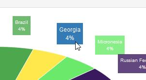

Displays sales totals by country. A sale is one unit, regardles of items purchased. Note that this function won`t display if the GeoIp functions are disabled
in the
settings as this feature will not work or be accurate.
A threshold groups countries that are less than 3%, these will be shown as "other". If you wish to increase or remove this threshold edit
the "admin/templates/js/mm-stats.js" file and line 50:
threshold: 0.03
Value can be 0 to 1. The "combine" parameter can be removed completely if required. Further reference can be found
here.
If you cannot read the countries because of the colour, hover your cursor for a better readable reference. Example:

You can also refer to the labels on the right hand side.